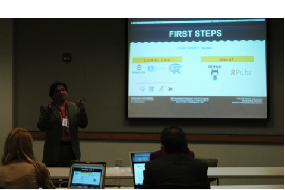

2017 International Conference on Social Computing, Behavioral-Cultural Modeling & Prediction and Behavior Representation in Modeling and Simulation
Tutorial ScheduleJuly 5, 2017
There will be nine three-hour tutorials.
Cost of tutorials:
With Conference Registration
$15 each or $20 for 2 or $25 for 3
Without Conference Registration
$50 each or $70 for 2 or $75 for 3
Matrix Methods for Social Network Analysis Data Collecting and Data Mining Online Text Data Geo-spatial and Temporal Analytics and Visualization
for Networks Social Cyber Forensics: Discovering Hidden Connections, Information Flows, And
Information Actors in The Modern Information Environment Integrating Simulation Modeling, Signal Processing and Machine Learning
in the Study of Large Social Systems Network Analysis and Visualization Using ORA Anti-discrimination learning: a causal modeling-based framework Agent Based Simulation and Meta-Modeling Social Influence and Groups in Twitter

Tutorial in 2015
Wednesday, July 5, 2017
Time
Tutorial Sessions Registration begins at 8am
Morning Tutorials
Matrix Methods for Social Network Analysis Data: Practical Applications of Excel
Nicole Fernandez
Collecting and Data Mining Online Text Data
Daniel Kercherner, Justin Littman, Laura Wrubel and David A. Broniatowski
Geo-spatial and Temporal Analytics and Visualization for Networks
L. Richard Carley, Carnegie Mellon University; Netanomics
Afternoon Tutorials
Social Cyber Forensics: Discovering Hidden Connections, Information Flows, and Information Actors in the Modern
Information Environment
Nitin Agarwal, Samer Al-khateeb, and Muhammad Nihal Hussein
Integrating Simulation Modeling, Signal Processing and
Machine Learning in the Study of Large Social Systems
Dong Wen
Network Analysis and Visualization using ORA
Jeff Reminga
Late Afternoon Tutorials
Anti-discrimination Learning: A Casual Modeling-based Framework
Lu Zhang, Yongkai Wu, and Xintao Wu
Agent Based Simulation and Meta-Modeling
Geoffrey Morgan
Social Influence and Groups in Twitter
Kathleen M. Carley